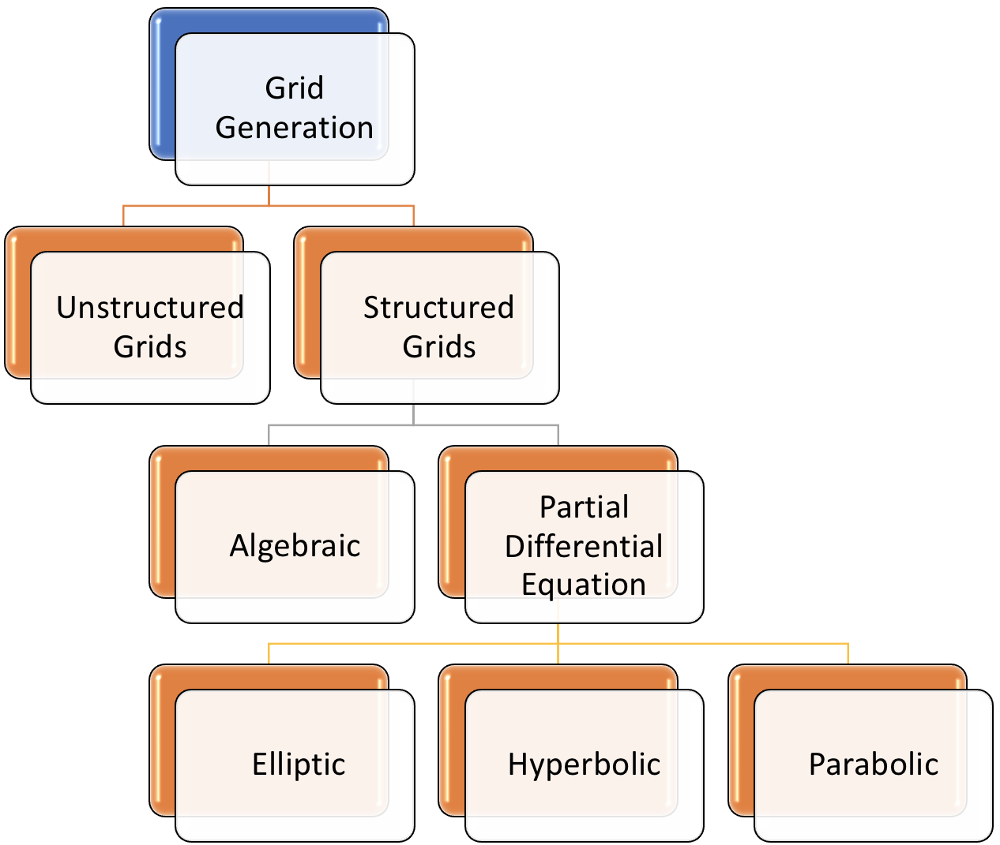

Documentaion for Elliptic Grid Generation¶
Author: Marc Salvadori
Email: msalvadori3@gatech.edu
The basic idea behind grid generation is the creation of the transformation laws between the physical space and the computational space. The different techniques to generate a grid can be summarized in the following diagram.
Elliptic grid generation is one of several methods used to generate structured grids for complex geometries. Algebraic methods are one commonly used alternative, and hyperbolic systems of equations are sometimes used, particularly for external flows. In this project it is required solve a pair of Laplace/Poisson equations to generate the mesh. Rather than work in the physical domain where the geometry is complicated and the equations are simple, we prefer to work in the computational domain where just the opposite is true. Once we have done our work in the computational domain, we bring the results back to the physical domain for viewing.
The overall procedure to generate a grid is as follows:
- Establish the transformation relations between the physical space and the computational space.
- Transform the governing equations and the boundary conditions into the computational space.
- Solve the equations in the computational space using the uniformly spaced rectangular grid.
- Perform a reverse transformation to represent the flow properties in the physical space.